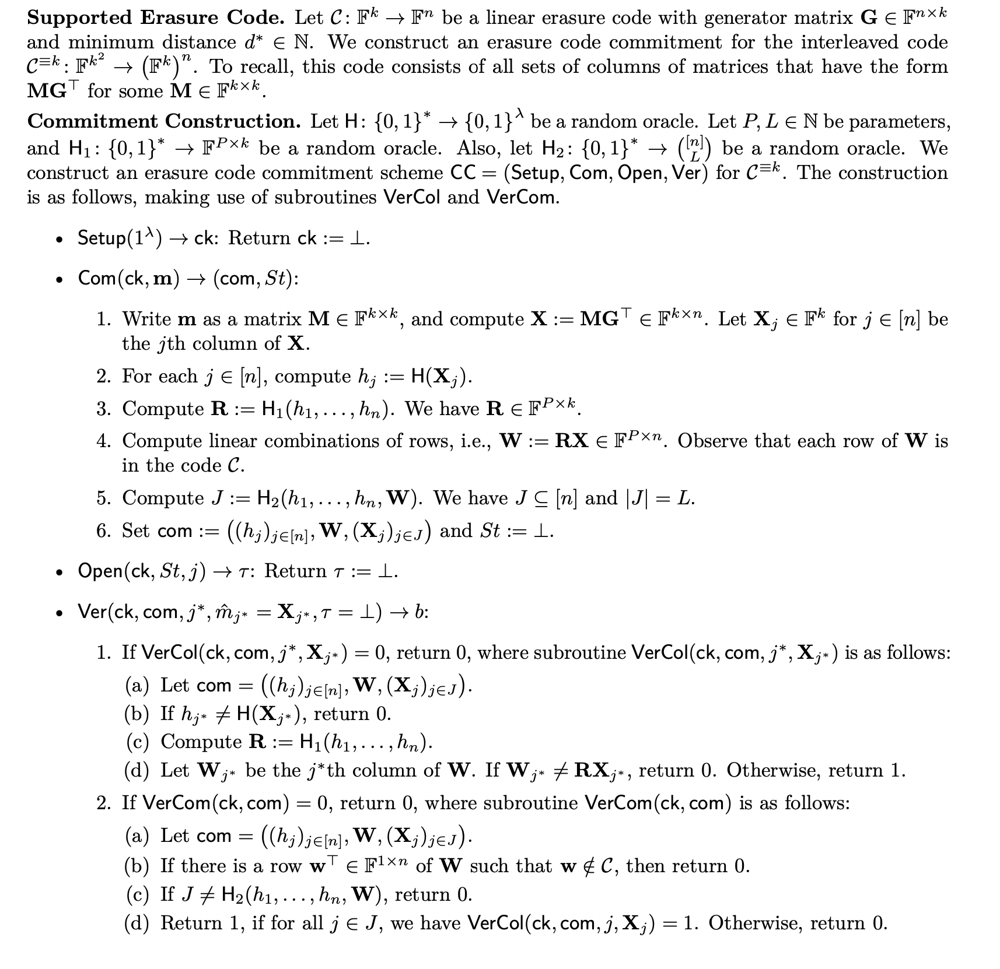

Learning by Subtracting
I typically have trouble with intuitively reasoning about the security of some new cryptographic scheme (?) by following the direct proofs in a paper. What I like to start with is taking away some parts of a spec and seeing what attacks now succeed as a result, that's how I learn why that part is there in the first place. I'm calling this Learning by Subtraction.
It's a simple idea, and by no means novel, but it's fun and it makes me really happy when some piece really clicks after seeing what goes wrong when something is missing. I'm going to keep adding examples of this idea as I come across them.
Bitcoin
When I was at McGill, I took a reading course where I covered game theory in blockchain networks. One of the lectures I gave on bitcoin helped me really grok why bitcoin is designed the way it is. Namely, I understood how double spending was prevented not only by Proof of Work but also by linking the blocks together. That way, blocks can't be built retroactively and replaced in a newer longest chain. The proof of work in a block must attest to the entire chain before it.
Commitment from Interleaved Codes
Foundations of Data Availability Sampling is a great paper that goes over a number of data availability schemes and how they differ by their so-called erasure code commitments. One such type of commitment the authors construct is the Interleaved Code Commitment which looks like this:

Regular commitment schemes have to ensure certain properties like position-binding and completeness to be deemed secure. These properties must also hold for erasure code commitments, but code-binding is also required. All commitments must be bound to a single (known) code \(\mathcal{C}\), so that an adversary cannot make any openings to a codeword outside of this code. The linear code \(\mathcal{C}\) is a linear subspace, and the vectors in it are called codewords. As the vector \(\textbf{w}\) in the commitment is assumed to be a random linear combination of codewords, \(\textbf{w}\) must also be a codeword. Meaning \(\textbf{H}\textbf{w} = 0\) and if not then \(\textbf{w}\) is not in the code. The scheme requires we check this to ensure all committed elements are in the code. You can easily check if an opening \(\textbf{X}_j\) is in the code by checking if \(\textbf{H}\textbf{X}_j = 0\), but then you might allow non-codewords to sneak past into the commitment if you don't also check \(\textbf{w}\). This is what give this scheme code-binding. We also want to check if \(\textbf{w}_j = \textbf{r}^T\textbf{X}_j\) because if that were missing then we can pass any vector \(\textbf{w}\) in our commitment that might be a valid codeword (so it passes all the other checks) but won't contain the opening. We already get position binding by checking the hash is in the commitment (in \(\text{VerCol.b}\)), so \(\text{VerCol.d}\) is a bit redundant but there is no other way to check if the opening is in the commitment.